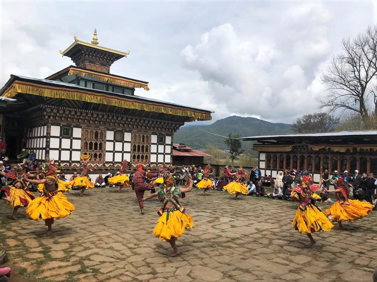

Major Festivals
Thimphu Tsechu
The Thimphu Tsechu is one of Bhutan’s largest festivals. Held in the capital, it features masked dances, rituals, and celebrations that attract thousands of visitors.
Paro Tsechu

Paro Tsechu is famous for its colorful masked dances and spiritual rituals. Locals and tourists gather to witness these performances, which celebrate Bhutanese culture and history.
Punakha Drupchen
Punakha Drupchen is a unique festival featuring reenactments of historical battles and religious ceremonies. It highlights the bravery and traditions of Bhutanese warriors.
Domkhar Festival
Celebrated in remote villages. Features local rituals, dances, and community gatherings to honor the harvest and ancestors.
Black-Necked Crane Festival
Celebrated in Phobjikha Valley, this festival honors the arrival of black-necked cranes. It combines traditional dances, music, and awareness about wildlife conservation.
Lomba Festival
Marks the start of the new agricultural year in some regions. Involves traditional games, blessings, and offerings to ensure good harvests.